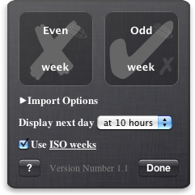
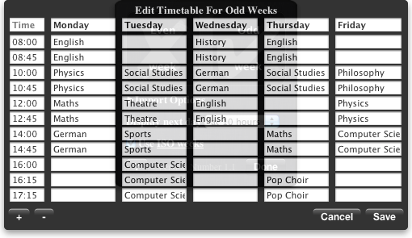

The widget supports different timetables for odd and even weeks which either can be created using the built-in editor or alternatively can be imported from files in the common CSV format which every spreadsheet program can export to.
To import your timetable into the widget, simply drag'n'drop it onto the corresponding box on the widget's back. You can do so by starting to drag the CSV-file in the Finder and then opening the Dashboard by pressing F12 (or F4 on a Macbook) where you can drop it.
| Monday | Tuesday | Wednesday | Thursday | Friday | |
|---|---|---|---|---|---|
| Class 1 | English | Physics | English | Physics | English |
| Class 2 | English | Physics | English | Physics | English |
| Class 3 | English | Physics | English | Physics | English |
| ... | |||||
This format is required but the first row (weekdays) as well as the first column (times) can be omitted when specified in the import options.
ISO week
means week starts on Monday
.
If you don't use different timetables for odd and even weeks you can safely ignore this option.
 
Great thanks goes to these artists for their work.
Mac OS X 10.4 Tiger is required.
If you’re using Safari, click the download link.
When the widget download is complete, show Dashboard, click the Plus sign to display the Widget Bar and click the widget’s icon in the Widget Bar to open it.
If you’re using a browser other than Safari, click the download link.
When the widget download is complete, unarchive it and place it in /Library/Widgets/ in your home folder.
Show Dashboard, click the Plus sign to display the Widget Bar and click the widget’s icon in the Widget Bar to open it.